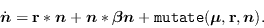
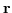
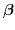
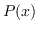
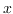
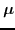
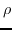
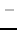
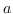
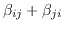

With mutation, equation (1) reads
|  | (9) |
The difficulty with adding mutation to this model is how to define the mapping between genotype space and phenotype space, or in other words, what defines the embryology. A few studies, including Ray's Tierra world, do this with an explicit mapping from the genotype to to some particular organism property (e.g. interpreted as machine language instructions, or as weight in a neural net). These organisms then interact with one another to determine the population dynamics. In this model, however, we are doing away with the organismal layer, and so an explicit embryology is impossible. The only possibility left is to use a statistical model of embryology. The mapping between genotype space and the population parameters ,  is expected to look like a rugged landscape, however, if two genotypes are close together (in a Hamming sense) then one might expect that the phenotypes are likely to be similar, as would the population parameters. This I call random embryology with locality.
In the simple case of point mutations, the probability  of any
child lying distance  in genotype space from its parent follows a
Poisson distribution. Random embryology with locality implies that the
phenotypic parameters are distributed randomly about the parent
species, with a standard deviation that depends monotonically on the
genotypic displacement. The simplest such model is to distribute the
phenotypic parameters in a Gaussian fashion about the parent's values,
with standard deviation proportional to the genotypic displacement.
This constant of proportionality can be conflated with the species'
intrinsic mutation rate, to give rise another phenotypic parameter
. It is assumed that the probability of a mutation generating a
previously existing species is negligible, and can be ignored. We also
need another arbitrary parameter , ``species radius'', or
ecolab.sp_sep, which can be understood as the
minimum genotypic distance separating species, conflated with the same
constant of proportionality as
.
In summary, the mutation algorithm is as follows:
ecolab.repro_max
ecolab.repro_min
generalization_bias. The values on
the new connections are chosen from the same initial distribution that
the offdiagonal values where originally set with, ie the range
ecolab.odiag_min to
ecolab.odiag_max. Since  in
condition (8) is computationally expensive, we use a
slightly stronger criterion that is sufficient, computationally
tractable yet still allows ``interesting'' non-definite matrix
behaviour namely that the sum
 should be
nonpositive.
ecolab.mut_max variable.